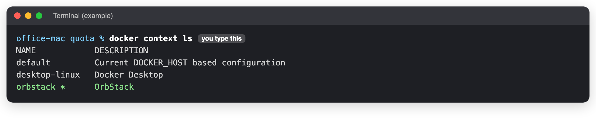
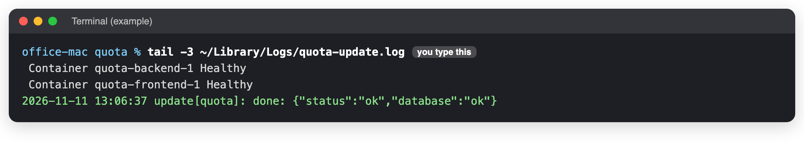
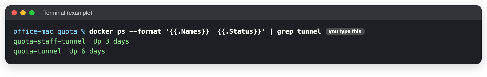
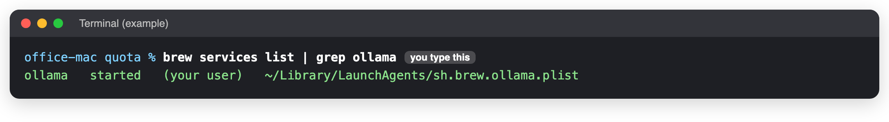
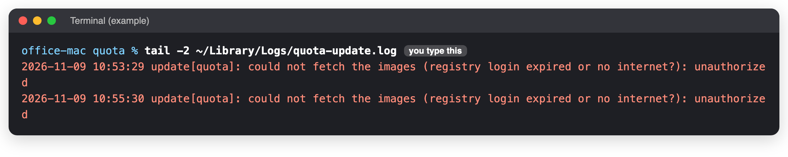
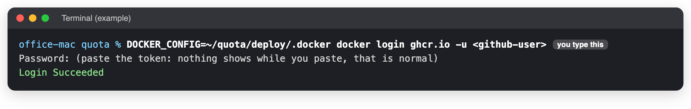

The office Mac
When to use this: The Mac was restarted or updated, someone installed something on it, or a new version did not arrive after a release. Time it takes: 10 minutes You need: A seat at the Mac, or the Terminal on it (connect).
Quota runs on the Mac mini in the office, from the folder ~/quota. Never run it from any other folder.
What must always be true
| What | Why |
|---|---|
| OrbStack is open, and set to Start at login | It runs every Quota box and both tunnels. They come back by themselves when it starts. |
| A user is logged in, and the Mac never sleeps | The update and backup jobs run only while someone is logged in. |
| The Mac starts by itself after a power cut | So Quota comes back with nobody in the office. |
| Ollama is running | The mailbox search by meaning uses it. |
| Docker Desktop is not used | If it is opened, it takes over and stops the boxes and the updates (this happened on 9 November 2026). |
Check it: 4 steps
1. OrbStack is in charge
docker context ls

You should see
A star * next to orbstack. If the star is somewhere else, type docker context use orbstack and press Return.
2. New versions arrive
tail -3 ~/Library/Logs/quota-update.log

You should see
The last line says done:. If it says unauthorized, do Quota's GitHub sign-in below.
3. The tunnels are up
docker ps --format '{{.Names}} {{.Status}}' | grep tunnel

You should see
quota-staff-tunnel and quota-tunnel, both Up. If one is missing: docker start quota-staff-tunnel quota-tunnel.
4. The search helper runs
brew services list | grep ollama

You should see
ollama started. If it says anything else: brew services restart ollama.
Quota's GitHub sign-in
The Mac downloads every new version from GitHub, signed in with a read-only key (a "token"). If the update log says unauthorized, the sign-in is gone or the token expired.

- Ask the developer for a new GitHub token with only read:packages (or make one on GitHub: your picture, top right → Settings → Developer settings → Personal access tokens → Tokens (classic) → Generate new token, tick only read:packages).
-
On the office Mac, type this (change
<github-user>to the GitHub username):DOCKER_CONFIG=~/quota/deploy/.docker docker login ghcr.io -u <github-user> -
When it asks for Password, paste the token and press Return. Nothing shows while you paste. That is normal.

-
Within 2 minutes the Mac installs whatever was released. Check with step 2 above.
The token is a password
Never put it in chat, e-mail or on this site.
The automatic jobs
| Job | When | Its log in ~/Library/Logs/ |
|---|---|---|
| Install a released version | Every 2 minutes | quota-update.log |
| Copy backups off the Mac | Every night at 03:15 | quota-offsite.log |
| Prove the backups can be restored | Every Sunday | quota-restore.log (appears after the first Sunday) |
To see them: launchctl list | grep quota. To put them back after a reinstall: cd ~/quota/deploy && ./install-macos.sh.
If you see something else
| You see | Do this |
|---|---|
| "I pressed Release but nothing changed" | Step 2. unauthorized: the sign-in above. FAILED ... rolled back: the new version was refused; tell the developer. |
Cannot connect to the Docker daemon |
Open OrbStack from Applications. Wait a minute. Then step 1. |
| After a power cut nothing came back | Someone must log in at the Mac once. Then check OrbStack is open. |
| Mail search finds words but not meanings | Step 4. |
Last checked: 2026-11-11